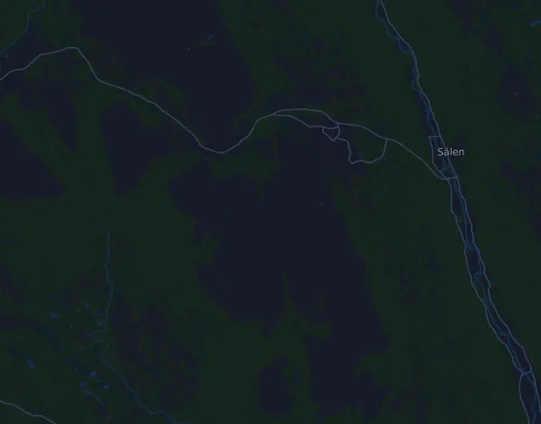

Fjällmaraton Sälen 42 km
- Distance
- 41.8 km
- Elevation gain
- ↑ 1,216 m
- Highest point
- 927 m a.s.l.
- Surface
- Trail
- Profile
- Hilly
Elevation profile
Prepare with Mila
Mila is a running coach app. Add a race to your plan and the coach plans your weeks up to race day around your form, and gives you a finish-time forecast and a plan for pacing, drinks and fuel on the course.

The right run, on the right day.
The course

About the course
Fjällmaraton Sälen 42 km is a trail race in Sälen (Lindvallen, Experiumtorget), Sweden, over 41.8 km. The course climbs 1,216 m and descends 1,215 m in total, 29 m per km, which makes it hilly. The highest point is 927 m above sea level and the lowest 572 m.
The biggest climb starts at km 18.7: 185 m of ascent over 3.4 km at 5.4 % on average, up to 921 m. In total the course has 10 climbs of at least 25 m; the last one starts at km 40.9.
In the Mila app, the coach describes the course in detail in your language and plans your pacing and fueling for it.
Climbs
| Starts at | Length | Gain | Gradient | Top (m above sea level) |
|---|---|---|---|---|
| km 0.2 | 1.4 km | 178 m | 12.8 % | 751 |
| km 1.8 | 1.8 km | 114 m | 6.5 % | 823 |
| km 5.2 | 4.2 km | 156 m | 3.7 % | 870 |
| km 16.1 | 1.1 km | 33 m | 3.1 % | 780 |
| km 18.7 | 3.4 km | 185 m | 5.4 % | 921 |
| km 23.3 | 1.2 km | 71 m | 5.7 % | 909 |
| km 25.7 | 310 m | 25 m | 8.2 % | 843 |
| km 30.2 | 6.1 km | 170 m | 2.8 % | 927 |
| km 38.8 | 290 m | 45 m | 15.2 % | 855 |
| km 40.9 | 620 m | 26 m | 4.2 % | 614 |
Pace table
Fjällmaraton Sälen 42 km in 3:00:00 – pace per km and splits
4:19 per km · km 10: 43:06 · km 21.1: 1:30:57 · km 30: 2:09:19 · km 40: 2:52:25 · finish: 3:00:00
Fjällmaraton Sälen 42 km in 3:30:00 – pace per km and splits
5:02 per km · km 10: 50:17 · km 21.1: 1:46:06 · km 30: 2:30:52 · km 40: 3:21:09 · finish: 3:30:00
Fjällmaraton Sälen 42 km in 4:00:00 – pace per km and splits
5:45 per km · km 10: 57:28 · km 21.1: 2:01:16 · km 30: 2:52:25 · km 40: 3:49:53 · finish: 4:00:00
Fjällmaraton Sälen 42 km in 4:30:00 – pace per km and splits
6:28 per km · km 10: 1:04:39 · km 21.1: 2:16:25 · km 30: 3:13:58 · km 40: 4:18:37 · finish: 4:30:00
The times assume an even pace the whole way. This is plain arithmetic, not a forecast: on climbs, in crowds and at aid stations the pace varies.
Frequently asked questions
When is Fjällmaraton Sälen 42 km?
Fjällmaraton Sälen 42 km takes place on Saturday, 21 August 2027. Check the date and start time with the organizer.
How long is Fjällmaraton Sälen 42 km and how much climbing is there?
The race is 41.8 km with 1,216 m of climbing and 1,215 m of descent. The highest point is 927 m above sea level.
What is the course of Fjällmaraton Sälen 42 km like?
The course is hilly, with 29 m of climbing per km on average. It has 10 climbs of at least 25 m; the biggest starts at km 18.7: 185 m over 3.4 km. Start and finish are in the same place. The surface is trail.
How should I pace Fjällmaraton Sälen 42 km?
Aim for an even effort rather than an even pace: let the pace drop on the climbs, win it back where it levels out, and hold back in the first kilometres. The biggest climbs start at km 0.2, km 5.2, km 18.7 and km 30.2. In Mila you get a pace plan for this course, based on your own form.
More races like this
More races nearby
- Stockholm Halvmaraton 21 km21 August 2027 · Stockholm, Sweden
- Midnattsloppet Göteborg 10 km21 August 2027 · Göteborg, Sweden
- Trailvasan 3021 August 2027 · Oxberg, Sweden
- Ultravasan 45 43.8 km21 August 2027 · Oxberg, Sweden
- Ultravasan 90 91.7 km21 August 2027 · Sälen (Berga by), Sweden
- Midnattsloppet Malmö 10 km28 August 2027 · Malmö, Sweden
Prepare with Mila
The right run, on the right day.
Details come from the course file and the organizer's information. Check the date, start times and rules with the organizer.
Mila is not affiliated with, sponsored by or endorsed by the organizer or the race's sponsors. Names and trademarks belong to their owners. Organizer or rights holder? Ask for a change or a removal